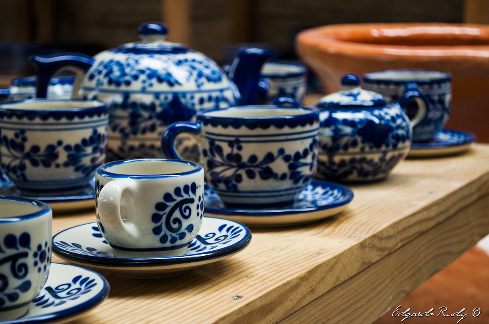

ACERCA DE LAS ARTESANIAS
1Historia
Las artesanías son un símbolo de tradición y arraigo, representan la cultura mexicana heredada por nuestros antepasados para crear objetos que satisfagan nuestras necesidades.
2Económia
Temascalcingo se ha caracterizado por su producción alfarera y otros tipos de artesanias, esta es la segunda actividad económica más importante del municipio y representa para la población mazahua y otros ciudadanos la fuente de sus sostenimiento.
3Tipos de Artesanías Temascalcinguenses
*Artesanías de barro.
*Artesanías de cerámica de alta temperatura.
*Artesanías de yeso.
*Artesanías de palma.
*Artesanías textiles.
*Artesanías de cantera.
ARTESANÍAS DE BARRO

CERÁMICA DE ALTA TEMPERATURA


ARTESANÍAS DE YESO
ARTESANÍAS DE PALMA

ARTESANÍAS TEXTILES
ARTESANÍAS DE CANTERA